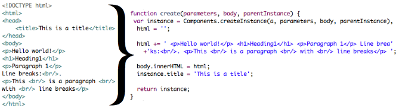

webJS by lubino
JavaScript library for online/offline web pages and apps. It translates HTML files to well optimized
reusable JS for dynamic page rendering based on MVC patterns.
The best way to create dynamic pages and apps.

This version is ready for production use, but still be aware. The documentation and tutorials are
in early development phase. If you want to use it, you need to study a few examples first.
Features
- Fast learning curve: HTML, CSS and JavaScript is all you need to know for 90% of activities
- Uses requireJS as prevention against messy spaghetti code
- Supports Browser-based mode for development without over-complex tools and processes
- MVC based data, logic and graphic separation
 empty_project.zip
empty_project.zip
Download
This ZIP file contains empty project file structure for quick start. If you want to use it for serious things, you will need nodejs platform to run build.sh script. If you just want to try it in "browser based mode" for fun or development reasons, you don't need to run build.sh and you don't need any node platform. Just download empty_project.zip, unzip it and open the "source/index.html" file in your browser.Live parser
Yes, it is in JavaScript, so there in no issue to create a live parser without server connection, try src/compiler.html.Live example
A page parsed from HTML to JavaScript, witch is used to render the page immediately, see source for more info src/example.html.Author
Lubos Strapko (lubino@gmail.com)